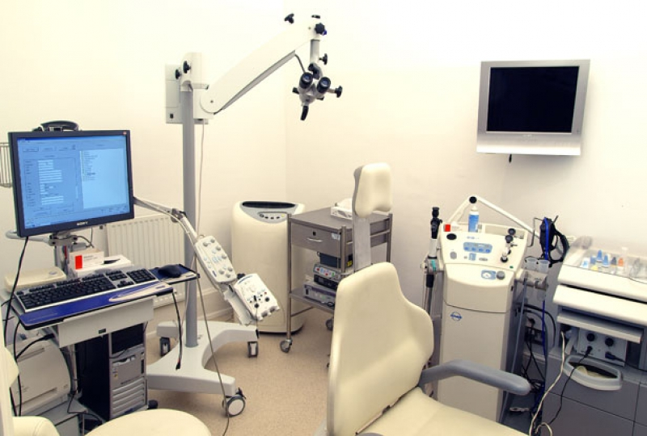

Poliklinik Spesialis THT-KL

Pada poli THT melayani konsultasi dan penanganan kesehatan yang berkaitan telinga, hidung dan tenggorokan.
Telinga, Hidung, dan Tenggorokan atau sering disebut dengan istilah THT adalah organ yang sangat penting bagi manusia.
Berikut defenisi mengenai ketiga organ tersebut :
Telinga adalah organ yang mampu mengenal suara dan juga banyak berperan dalam keseimbangan tubuh.
Hidung adalah penonjolan pada vertebrata yang mengandung nostril yang menyaring udara untuk pernapasan.
Sedangkan tenggorokan adalah bagian dari leher yang terdiri dari faring dan laring.
Tenggorokan memiliki dua bagian yaitu bagian jalan makan (kerongkongan) dan bagian jalan napas (tenggorok)
Praktek : Hari Senin-Sabtu